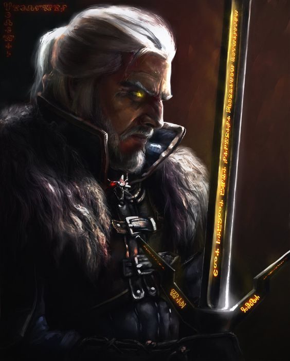
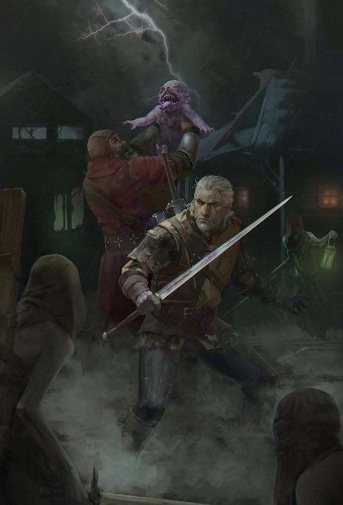
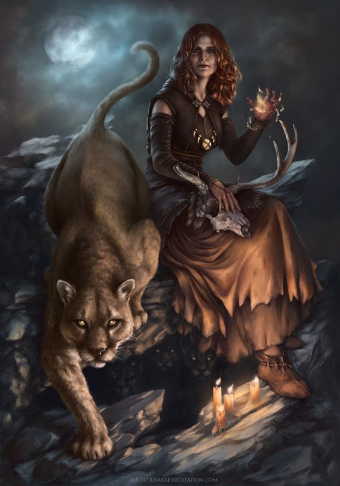
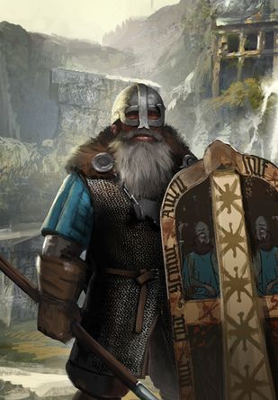
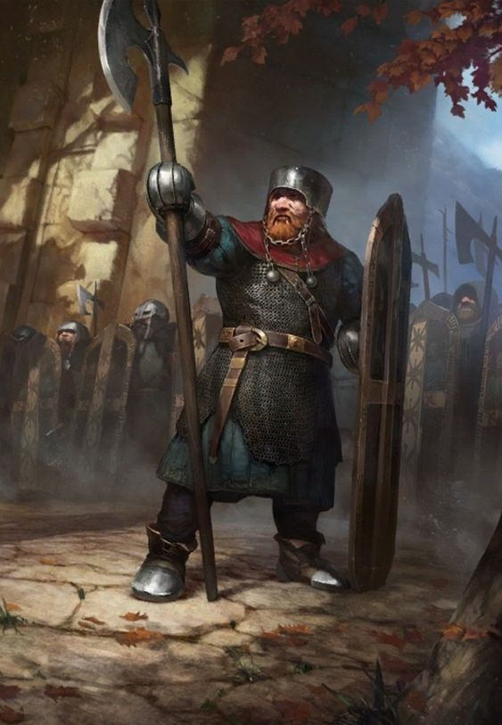
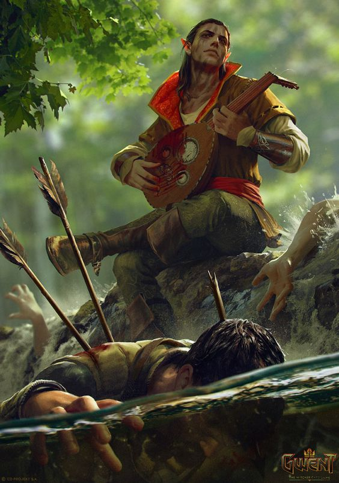

Wiedźmini
Wiedźmin (Wiedźmak, Vedymin, Vatt'ghern) – mutant-wojownik, szkolony od małego dziecka do zabijania potworów. Stworzeni przez czarodziejów. Jednym z twórców pierwszych wiedźminów był Alzur. Podczas szkolenia dzieci poddawane są morderczym mutacjom wiedźmińskim (Próbą Traw). Większość dzieci nie przeżywa mutacji. Im silniejsza jest mutacja, tym trudniej jest adeptowi samodzielnie myśleć.
Wiedźmini są najemnikami – zabijają potwory po uzyskaniu zlecenia, za określoną kwotę pieniędzy. Wiedźmin dzięki mutacjom jest maszyną do zabijania. Jest bardzo silny, szybki i zabójczy dla swoich wrogów. Znają i potrafią używać prostych zaklęć w postaci znaków.
Niewielka liczebność wiedźminów wynika z wysokiej śmiertelności w czasie Prób i Zmian, morderczego szkolenia oraz z niebezpiecznego życia (żaden nie umarł śmiercią naturalną). Ponadto nikt nie jest w stanie stworzyć nowych wiedźminów z uwagi na fakt, iż żaden czarodziej nie ma dostępu do aparatury, składników i receptur obecnych jedynie w Kaer Morhen (sami wiedźmini nie potrafią ich obsługiwać). Wiedźmini ze starszyzny, znający tajemnicę tworzenia nowych wiedźminów, zostali zabici podczas ataku na Kaer Morhen. Na temat szkół kota i gryfa można wyciągnąć podobne wnioski czyli zostały zniszczone.
Czarodzieje
Czarodzieje – ludzie, elfy lub vrany potrafiące władać mocą, posiadający bardzo rozległą wiedzę w dziedzinie magii, leczenia i astrologii, sprawnie posługujący się zaklęciami.
Czarodzieje zapisali się na kartach historii już na samym jej początku. Byli szanowani i uwielbiani, jednak później ludzie zaczęli sobie radzić bez czarodziejów czy innych kwalifikacji, np. wiedźminów. Tych pierwszych można było ówcześnie spotkać na dworach królewskich, w miastach lub szkołach Magii - Ban Ard dla mężczyzn i Aretuza dla kobiet. Posiadają własne organizacje takie jak Kapituła czy Rada. Na Północy dysponowali znacznymi wpływami, w odróżnieniu od Nilfgaardu, gdzie ich rola została znacznie ograniczona.
Bractwo Czarodziejów przestało istnieć po buncie na Thanedd, kiedy część magów oskarżono o zdradę na rzecz Nilfgaardu, po cym aresztowano lub zabito. Byli tam obecni wszyscy liczący się czarodzieje, ponieważ w dniu następnym miała się odbyć ważna narada. Podczas walk ginęli również neutralni magowie, miedzy innymi Hen Gedymdeith, którzy pamiętali jeszcze początki ludzkiej kolonizacji. Wkrótce potem Tissaia de Vries popełniła samobójstwo. Dzień jej śmierci stal się końcem Bractwa i początkiem nowego ładu.
Krasnoludy
Rasa humanoidalna, wzrostem dorosły krasnolud sięga ludzkiemu mężczyźnie mniej więcej do piersi. Są dużo lepiej zbudowani od ludzi, dzięki czemu są silniejsi i wytrzymalsi, noszą zwykle długie brody, które są wyznacznikiem wieku ich posiadacza.
Rodzinną ziemią krasnoludów jest Mahakam. Jako że jednak krasnoludzkie społeczeństwo integruje się poprzez klany, nie mają oni problemu ze zmienieniem miejsca zamieszkania. Często więc bywa, że osiedlają się oni w ludzkich miastach, mimo że często bywają tam celami szykan oraz pogromów. Niektórzy z młodych krasnoludów wstępowali do komand Scoia'tael, za co byli potępiani przez niektórych ze swych pobratymców, a zwłaszcza przez Brouvera Hooga.
W przeciwieństwie do elfów krasnoludy dość chętnie asymilują się z innymi rasami, nawet z ludźmi. W szczególnie dobrej komitywie żyją z gnomami, z którymi wespół pracują w mahakamskich kuźniach i kopalniach. Krasnoludy to dość praktyczny i racjonalny naród, w ważnych sprawach zwykle kierują się rozumem i logiką. Są przy tym jednak bardzo dumni oraz niezwykle czuli na punkcie własnego honoru, zwłaszcza jeśli chodzi o ich krasnoludzkie kobiety. Przedstawiciele tej rasy często bywają świetnymi żołnierzami, doskonale znają się na wszelkich rzemiosłach oraz mają niezwykłą smykałkę do interesów. Zwykle nieco grubiańscy, szybko jednak dają się poznać z ich wesołej, pogodnej i rubasznej strony. Są urodzonymi piechurami, ponieważ o własnych nogach w ciągu jednego dnia potrafią pokonać taki sam dystans co człowiek na koniu, i to jeszcze z bagażem.
Elfy
Elf – humanoidalna rasa, jedna ze starszych ras, która przybyła na swoich białych okrętach na Kontynent o wiele wcześniej niż ludzie. Kiedy ludzie zasiedlali kontynent przegonili Elfy z ich rodzinnych stron, na przykład zDoliny Kwiatów (Dol Blathanna. Przez to elfy pałają nienawiścią do ludzi.
Elfy były długowieczne, a ich twarze z reguły szczupłe i wyraziste. Rasę ową charakteryzował również wzrost. Były bardzo wysokie, o szczupłej budowie ciała. Charakterystycznym elementem były spiczaste uszy, długie palce i małe, drobne, pozbawione kłów zęby. Wiele elfów nosiło długie, proste i lekko podkoloryzowane warkoczami fryzury o rzadkim pigmencie. Były jednymi z najlepszych łuczników, wykazywały też wyjątkowe zdolności magiczne, dlatego elfi czarodzieje byli bardzo szanowani.